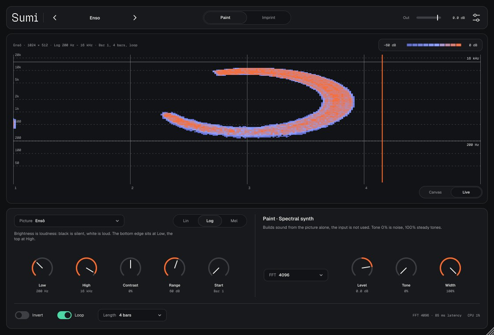
Sumi рисует картинку на спектрограмме. Яркость пикселя становится громкостью, высота — частотой, ширина — временем.
Откройте звук в любом анализаторе спектра — там будет картинка. Название — японская тушь (墨): картинка ложится на спектр, как тушь на бумагу.
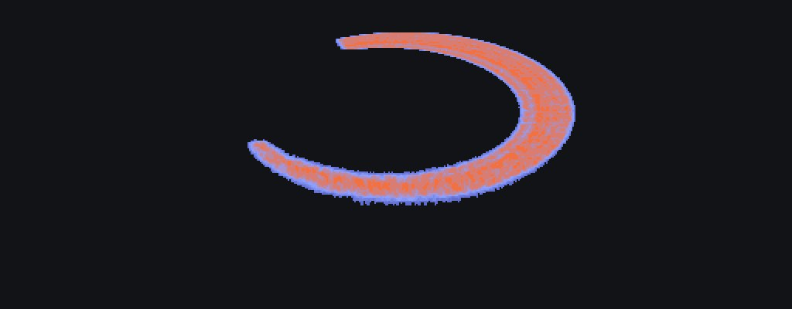
Нужен Mac с macOS 11 или новее (Apple Silicon или Intel). Плагин не подписан сертификатом Apple, поэтому ставится скриптом, который снимает карантин.
Нужен установленный gh (GitHub CLI). Команда скачивает последний релиз, распаковывает и устанавливает:
cd ~/Downloads && rm -rf Sumi-macOS Sumi-macOS.zip && gh release download -R controloptioncommand/Sumi-vst -p Sumi-macOS.zip && unzip -q Sumi-macOS.zip -d Sumi-macOS && bash Sumi-macOS/install-mac.sh
bash ~/Downloads/Sumi-macOS/install-mac.sh. Скрипт кладёт Sumi.vst3 и Sumi.component в ~/Library/Audio/Plug-Ins.В архиве есть папка demo: примеры звучания пресетов и их спектрограммы. Обновление — та же команда: новая версия заменит старую, проекты и пресеты не трогаются.
| Зона | Что там |
|---|---|
| Тулбар | Логотип (клик — страница About), пресет ‹ имя ›, режим Paint / Imprint, Out, настройки. |
| Главный вид | Canvas — картинка так, как она ляжет на спектрограмму, Live — спектрограмма выхода. |
| Панель слева | Картинка: выбор, шкала, полоса частот, Contrast, Range, такт начала. |
| Панель справа | Режим: размер FFT и ручки Paint или Imprint. |
| Подвал | Invert, Loop, Length; справа размер FFT, задержка и нагрузка CPU. |
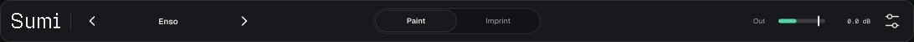
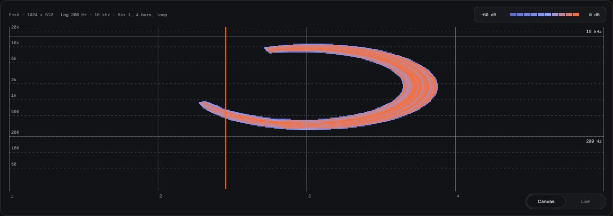
Canvas показывает картинку так, как её покажет спектрограмма. По горизонтали — время картинки (номера тактов снизу), по вертикали — частота в выбранной шкале: Lin от 0, Log от 20 Hz, Mel от 0 — до половины частоты дискретизации. Светлые линии с подписями справа — края картинки Low и High. Цвет — громкость, от −Range до 0 dB (легенда сверху справа).
Сверху слева: имя картинки, её размер в пикселях, шкала и полоса, такт начала, длина и Loop.
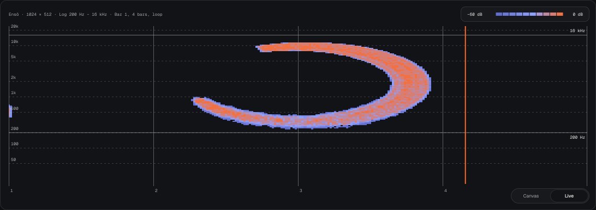
Live — спектрограмма того, что выходит из плагина, в той же шкале. Колонки пишутся под курсором, пока идёт транспорт, а бледный след картинки под ней помогает сравнить. Уровень считается от пика последних колонок, цвет — в пределах Range.
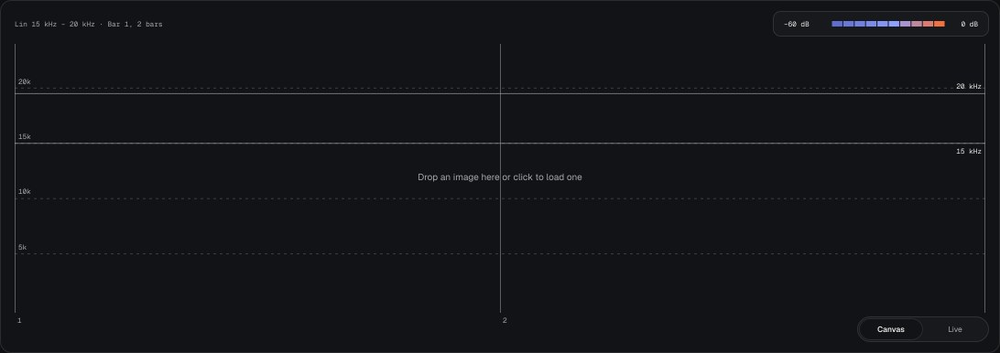
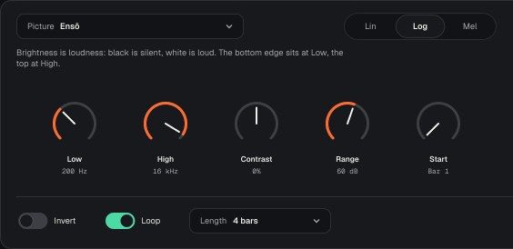
Чип Picture открывает меню:
Картинка хранится в проекте и в пресете: своя — внутри (PNG), встроенная и текст — только именем.
| Ручка | Диапазон | Что делает |
|---|---|---|
| Lin / Log / Mel | Log | Шкала частот картинки. Ставьте ту же, что у анализатора: Lin — Spek, Audacity, большинство онлайн-спектрограмм; Log — iZotope RX, SPAN, Pro-Q, спектр Ableton; Mel — анализаторы речи и машинного обучения. Иначе картинка растянется по высоте. |
| Low | 20 Hz–20 kHz, 200 Hz | Частота нижнего края картинки. |
| High | 40 Hz–22 kHz, 16 kHz | Частота верхнего края. Если High ниже Low, полоса становится узкой над Low. Выше половины частоты дискретизации ничего не звучит. |
| Contrast | −100…+100%, 0 | Гамма яркости: плюс — средние тона тише (картинка контрастнее), минус — громче. |
| Range | 12–96 dB, 60 dB | Сколько децибел между белым и самым тёмным серым. Меньше — серые громче и картинка плотнее, больше — тоньше полутона. |
| Invert | вкл / выкл | Белое — тишина, чёрное — громко. Для тёмного рисунка на светлом фоне. |
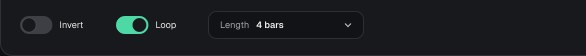
Картинка стоит на шкале DAW и играет по транспорту: в остановленном проекте Paint молчит, а Imprint пропускает звук без изменений.
| Ручка | Диапазон | Что делает |
|---|---|---|
| Start | Bar 1–256, Bar 1 | Такт, с которого начинается картинка. До него картинки нет. |
| Length | 1/2–64 bars, 4 bars | Длина картинки. Такт берётся из размера проекта (4/4 — четыре четверти). |
| Loop | вкл | После конца картинка начинается снова. Выключено — звучит один раз. |
| FFT | 1024–8192, 4096 | Размер кадра спектра. Маленький — чёткие края по времени, но грубее по частоте; большой — наоборот. Он же задержка плагина: 4096 при 48 кГц — 85 мс. |
Задержка сообщается хосту, и он её компенсирует: картинка точно попадает на свой такт, в том числе в экспорте. Без транспорта хоста (Standalone) картинка идёт по кругу с начала.
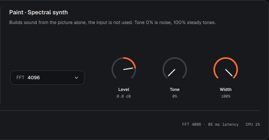
Звук строится только из картинки, вход не используется. Поставьте Sumi на пустую аудиодорожку.
Каждый кадр — столбец картинки: для каждой полосы частот громкость берётся из яркости, фаза — случайная или ровная. Кадры складываются обратным преобразованием Фурье с перекрытием 75%.
| Ручка | Диапазон | Что делает |
|---|---|---|
| Level | −48…+12 dB, 0 | Громкость картинки. При 0 dB вся полоса, залитая белым, даёт около −14 dBFS RMS, независимо от ширины полосы и FFT. |
| Tone | 0–100%, 0 | 0 — каждая полоса шумит (картинка самая чёткая, звук — шорох). 100 — ровные тона на частотах полос (звучит как орган, на спектрограмме тонкие линии). |
| Width | 0–100%, 100% | Стерео: 0 — моно, 100 — каналы с разной фазой, широкий звук. |
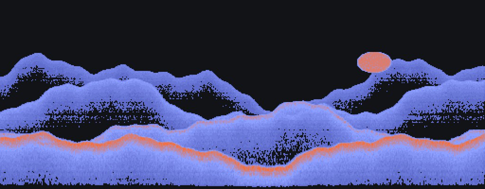
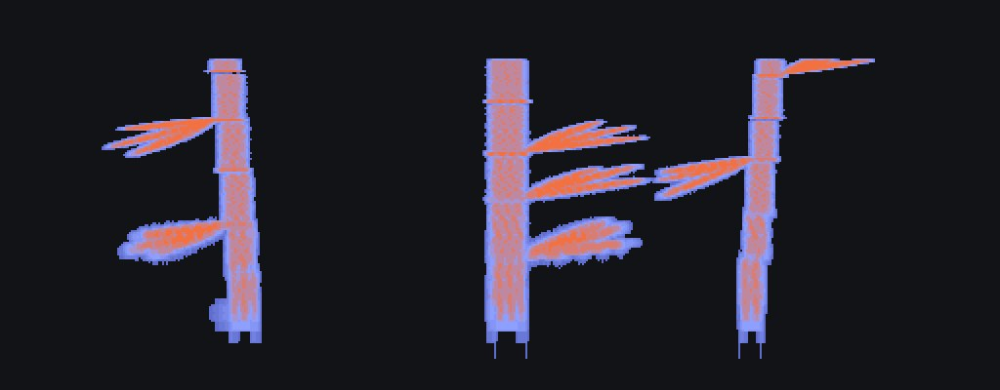
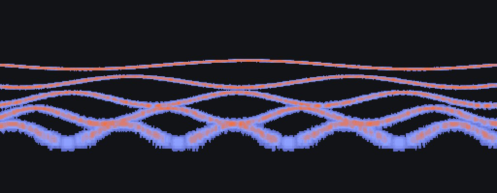
Картинка вписывается в звук на входе. Поставьте Sumi на дорожку со звуком.
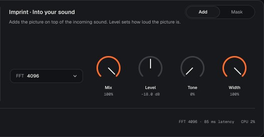
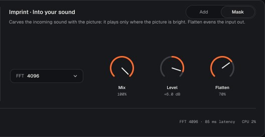
Картинка синтезируется как в Paint и прибавляется к звуку. Сам звук не меняется. Так прячут подпись или рисунок в верхних частотах трека: на слух почти незаметно, на спектрограмме видно.
Звук умножается на картинку: он остаётся только там, где картинка светлая. Вне полосы Low–High звук глушится — иначе вырезанное тонуло бы в остальном спектре. Картинка видна там, где у звука есть энергия, поэтому лучше всего работает на насыщенном материале: шум, пэды, барабаны, полный микс.
| Ручка | Диапазон | Что делает |
|---|---|---|
| Add / Mask | Mask | Как вписывать картинку. |
| Mix | 0–100%, 100% | Сухой и обработанный звук. Сухой задержан на то же время, поэтому фазы совпадают. |
| Level | −48…+12 dB, 0 | Add — громкость картинки. Mask — громкость вырезанного звука (компенсирует то, что вырезано). |
| Tone, Width | как в Paint | Только Add: характер картинки. |
| Flatten | 0–100%, 50% | Только Mask: выравнивает спектр входа к среднему (до ±30 dB), чтобы картинка проступала и там, где у звука мало энергии. 0 — тембр как есть, 100 — почти ровный шум с формой картинки. |
Вне картинки по времени (до Start, после конца без Loop, на остановке) звук проходит без изменений.
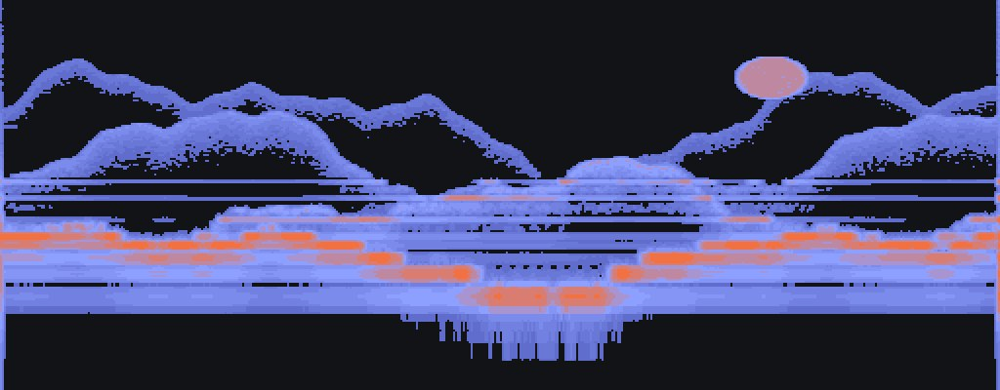
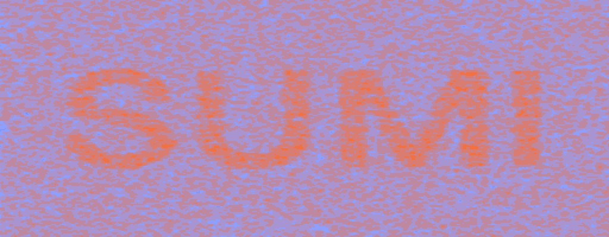
Paint: Enso, Ink Wordmark, Misty Mountains, Bamboo Organ, Rain on Glass, Sliding Tones, Test Card. Imprint: Carve Mountains, Enso Stencil, Hidden Signature, Rain Layer, Half Mask.
Пресет хранит картинку и все ручки, кроме громкости Out. Сохранить свой: меню пресета или настройки → Save preset…. Ваши пресеты лежат в ~/Music/Sumi/Presets/*.sumi, в меню они ниже фабричных, стрелки ‹ › листают и их.
Картинка и ручки сохраняются в проекте. Тема и размер окна — общие для всех проектов (~/Library/Application Support/Sumi).
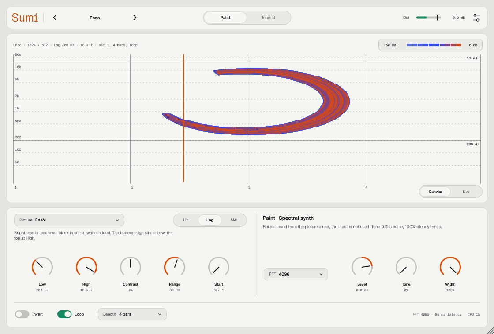
| Вопрос | Ответ |
|---|---|
| Sumi не появился в Ableton | Settings → Plug-Ins: включены «Use VST3 Plug-ins» и «Use Audio Units», затем Rescan. Если не помогло, повторите установку скриптом: он снимает карантин macOS. |
| macOS пишет, что плагин повреждён | Это карантин неподписанного плагина. Запустите install-mac.sh ещё раз. |
| Нет звука | Картинка играет по транспорту: нажмите Play и проверьте Start (картинка начинается с этого такта) и Loop. В Paint вход не используется — нужна картинка. Проверьте, что Out не на минимуме. |
| Картинка на спектрограмме растянута или сплющена | По высоте — выберите ту же шкалу (Lin / Log / Mel) и полосу, что у анализатора. По ширине — подберите Length. |
| Картинка вышла негативом | Включите Invert: Sumi считает громким белое. |
| В Mask картинку почти не видно | Поднимите Flatten и Level, расширьте полосу туда, где у звука есть энергия. На тихом или узком по спектру звуке рисовать нечем — попробуйте Add. |
| Звук запаздывает | Задержка равна размеру FFT (4096 при 48 кГц — 85 мс), хост её компенсирует. Если трек играется вживую через монитор — уменьшите FFT. |
| Откроются ли старые проекты после обновления? | Да, состояние и картинка сохраняются между версиями. Если диапазон какого-то параметра меняется, это будет сказано в патчноуте. |
| Где история изменений | На странице релизов GitHub, у каждой версии свой патчноут. |
Sumi v1 · made by nnn · написан на C++ и JUCE 8. Встроенные картинки нарисованы кодом, шрифты Medeo — SIL Open Font License.
Исходники и релизы: github.com/controloptioncommand/Sumi-vst